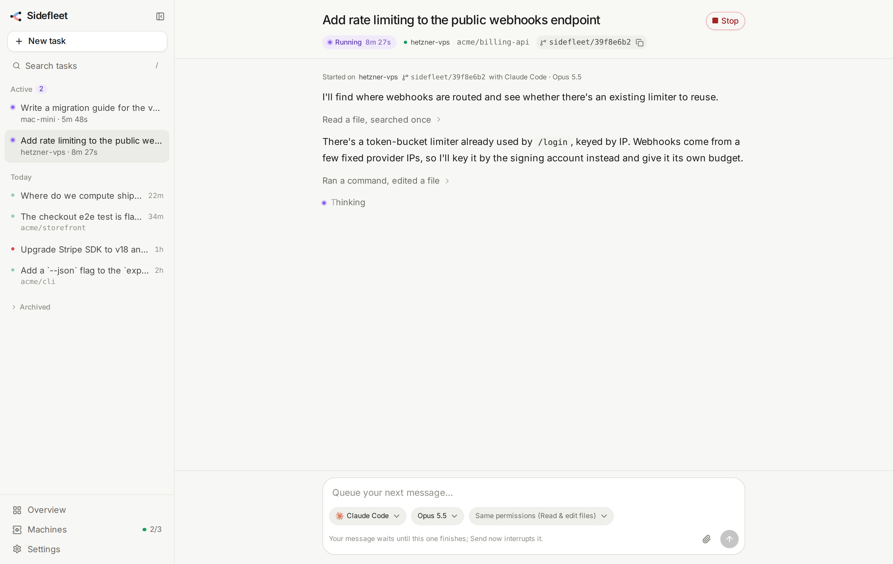
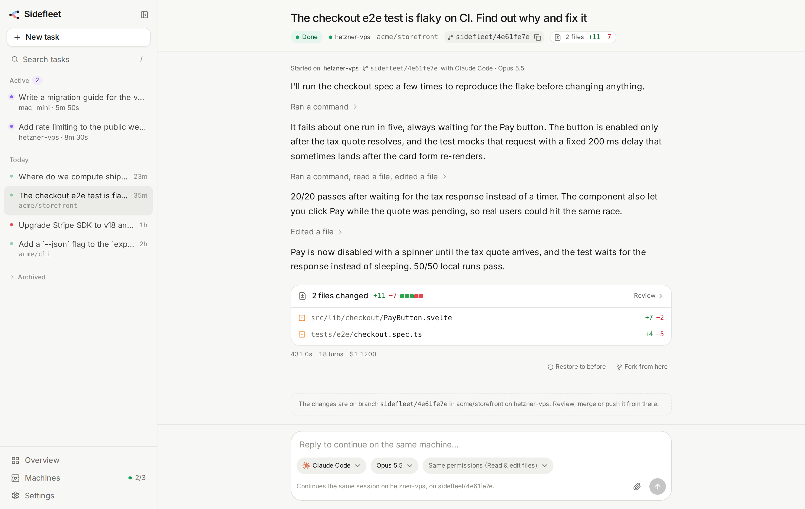
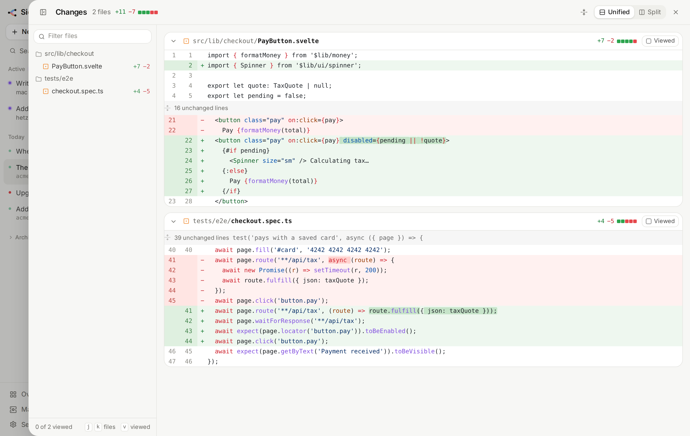
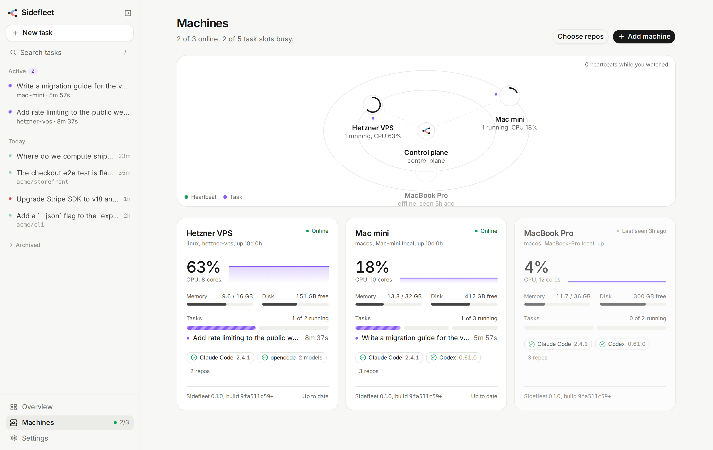
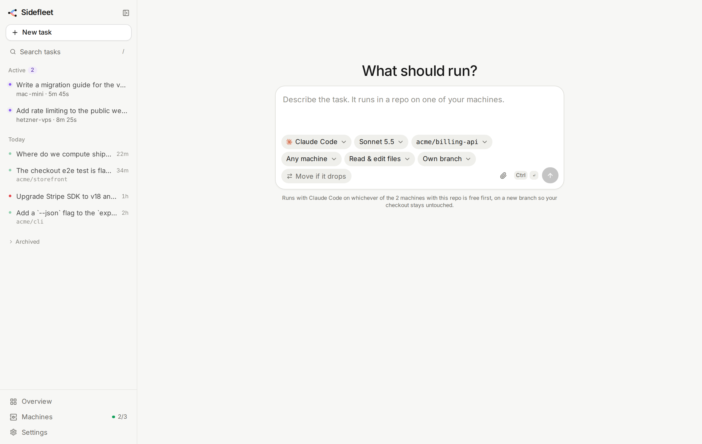

$ Sidefleet control plane is running. Open the page: http://100.84.2.7:7373/ Connect a machine: sidefleet connect …
1Start the control plane
The web page, the API and Postgres on one box. If it has an agent, it's your first worker too.
Type a task on any device. A machine you own picks it up and runs Claude Code, Codex or opencode in its own worktree, streaming every step back live.
MIT licensed · One Rust binary · macOS and Linux
No API keys for Claude or Codex: Sidefleet drives the sign-in already on each machine. No open ports: machines only ever call out to your control plane.
$ Sidefleet control plane is running. Open the page: http://100.84.2.7:7373/ Connect a machine: sidefleet connect …
The web page, the API and Postgres on one box. If it has an agent, it's your first worker too.
sidefleet connect finds your agents and repos and installs a service. Or paste a prompt and let the agent connect itself.
Your phone on the couch, a borrowed laptop, the desk. The least busy machine with that repo and agent picks it up.
Each connected machine shows up live with its repos, agents, CPU and running tasks. Each task lands on the least busy machine that has the repo and the agent, or you pin one.
The agent's narration and tool calls stream in within milliseconds and survive reloads and dropped connections. It's a conversation: reply to keep going, and the agent resumes the same session.
Turn on “Move if it drops” and the worker pushes the task's own branch at most once a minute while the agent edits. If the machine goes quiet, another one with the repo picks up from the last pushed commit, with a digest of the thread so far.
Each task runs in its own git worktree on a sidefleet/<id> branch, so several tasks on one repo run side by side without touching your checkout. Choose “In place” when a task needs installed dependencies or local config.
When it's done, read through the changes on the page, then merge the branch like any other.
Every message's files are snapshotted before and after, so you can put the worktree back to how it was before any of them. Or start a new thread from any message, with a different agent and model.
The conversation carries on, and a restore can itself be undone.
A Claude Code thread continued in Codex starts on its own branch, with the files as they were after that message and the conversation so far as a transcript.
Move the cart total into a hook
Restore to beforeMoved it into useCartTotal; 3 files changed, tests pass.
Now cache it in localStorage too
Restore to beforeAdded a cache layer and a migration for old carts.
Fork from hereSidefleet is a control plane and a worker you run yourself. There's no Sidefleet cloud in the middle: the agents run where your code already lives.





Downloads a prebuilt sidefleet into ~/.local/bin with no sudo, or builds from source when there's no release for your platform.
curl -fsSL https://raw.githubusercontent.com/foodaka/side-fleet/main/install.sh | shsidefleet servesidefleet connect --control <url> --token <t>Not for Claude Code or Codex: Sidefleet drives the sign-in already on each machine, so usage counts against that account's plan. opencode brings any other model through its own providers, like OpenRouter or a local Ollama.
Nowhere new. Agents run on your machines, in worktrees of checkouts that are already there. The control plane is yours too, and only sees the agent's narration and tool calls, with secrets redacted.
Yes. The page works on any browser that can reach your control plane. Put it on Tailscale and it's reachable from your phone anywhere, without exposing it to the internet.
Not if the task has “Move if it drops” on: the worker pushes the task's own sidefleet/… branch as it goes, and another machine with the repo continues from the last pushed commit. Without it, the task stops with the machine.
macOS (arm64 and x86_64) and Linux (x86_64 and arm64). The control plane needs Postgres; one Docker command sets it up.
Yes: fork the thread from any message into another agent and model. The new agent gets the conversation so far as a transcript and starts from the files as they were at that point.
Sidefleet drives your own sign-ins, headless. Check the terms of your subscriptions for automated or unattended use, and never share or resell access to an account through it.
Your desk Mac, a Mac mini, a VPS. One page to run agents on all of them.